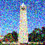
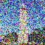
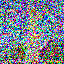
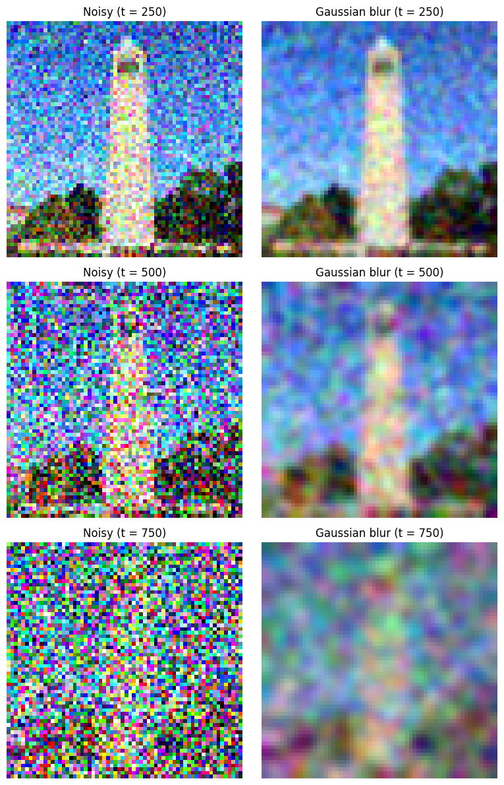
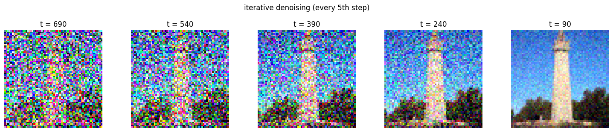

Diffusion Model Project
Student:
Chance Brewer
1. Original Image & Noisy Variants
Original (TI)

Noisy t = 250

Noisy t = 500

Noisy t = 750
2. Gaussian Blur, One-Step Denoising, Iterative Denoising
Gaussian (250)

Gaussian (500)
Gaussian (750)
Gaussian Blur (Full)
Iterative (t=90)
Iterative (t=240)
Iterative (t=390)

Iterative (t=540)
Iterative (t=690)
3. Sampling From Noise (No CFG)
DMS1
DMS2
DMS3
DMS4
DMS5
4. Classifier-Free Guidance (γ = 7)
CFG1
CFG2
CFG3
CFG4
CFG5
5. SDEdit: Image-to-Image Edits (Test Image)
SDEdit 1
SDEdit 2
SDEdit 3
SDEdit 4
← Back to main portfolio